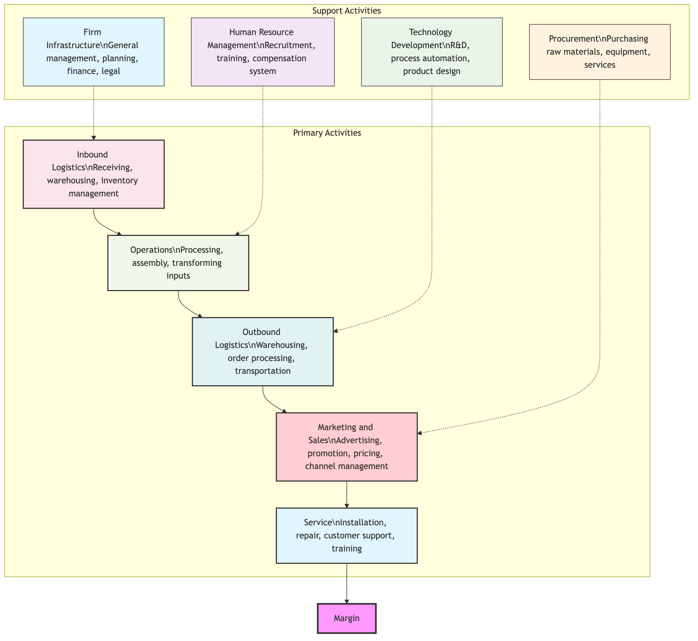

Value Chain Analysis¶
The fundamental reason why a company can make a profit is that the value it creates for customers exceeds its cost in the process of creating that value. Value Chain Analysis is a powerful analytical tool proposed by Michael Porter, a master of strategic management. It views a company as a "chain" composed of a series of value-creating activities, aiming to systematically examine and break down these activities to identify where the company's competitive advantage originates and in which links costs can be further optimized or differentiation created.
Unlike traditional analysis that focuses solely on the final output, value chain analysis provides a "microscope" for in-depth examination of internal company operations. It divides all company activities into two major categories: Primary Activities and Support Activities. By analyzing these activities and their interconnections one by one, managers can clearly see how value flows and increases within the company, thereby finding the key to building and maintaining sustainable competitive advantage.
Components of the Value Chain¶
Michael Porter systematically breaks down a company's value-creating activities into nine interconnected categories, forming a universal value chain model.

-
Primary Activities These are activities directly involved in the physical creation, sale, transfer to the buyer, and after-sales service of the product.
- Inbound Logistics: Activities related to receiving, warehousing, and distributing inputs needed for production, such as raw material handling, inventory control.
- Operations: Activities that transform inputs into final products, such as machining, assembly, testing.
- Outbound Logistics: Activities involved in collecting, storing, and distributing final products to customers, such as finished goods warehousing, order processing, transportation.
- Marketing and Sales: Activities that induce and persuade customers to purchase the product, such as advertising, promotion, pricing, channel selection.
- Service: Activities that provide support to maintain or enhance product value, such as installation, repair, customer training, complaint handling.
-
Support Activities These activities do not directly create the product themselves, but they add value and improve efficiency by supporting primary activities.
- Firm Infrastructure: Includes general management, planning, finance, accounting, legal, etc., which support the entire value chain.
- Human Resource Management: Involves employee recruitment, hiring, training, development, and compensation.
- Technology Development: Activities related to improving products and processes, such as R&D, product design, process automation.
- Procurement: Refers to activities of purchasing inputs used throughout the company's value chain, not just raw materials.
How to Conduct Value Chain Analysis¶
The goal of conducting value chain analysis is usually to achieve two core competitive advantages: cost advantage or differentiation advantage.
-
Step 1: Decompose the Company's Value Chain Activities Using the framework above, specifically identify the key activities your company performs within each category. For different industries, certain activities will be far more important than others.
-
Step 2: Identify Cost Drivers and Seek Cost Advantage
- Allocate Costs: Allocate the company's total costs to each value activity as accurately as possible.
- Identify Cost Drivers: Analyze what factors drive the cost of each activity. Is it economies of scale, learning curves, capacity utilization, or geographical location?
- Find Optimization Opportunities: Consider where costs can be reduced through technological improvements, process optimization, strengthening relationships with suppliers, etc., without compromising value.
-
Step 3: Identify Value Drivers and Seek Differentiation Advantage
- Analyze Customer Value: For each activity, consider how we create unique value for customers. What value are customers willing to pay for?
- Identify Differentiation Drivers: Analyze in which activities we can create differentiation by offering unique product features, superior service, a strong brand image, or faster response times.
- Find Improvement Opportunities: Consider how to build and strengthen the company's differentiation advantage by enhancing certain value activities (e.g., R&D, brand marketing, customer service).
-
Step 4: Analyze Value Chain Linkages The strength of the value chain lies not only in focusing on individual activities but also on the linkages between activities. An optimization in one link may have a profound impact on another. For example, investing more in procurement to buy higher-quality raw materials might significantly reduce defect rates in operations and repair costs in after-sales service. Identifying and optimizing these linkages is key to gaining competitive advantage.
Application Cases¶
Case 1: IKEA's Cost Advantage Value Chain
- Core Strategy: Cost leadership.
- Value Chain Analysis:
- Technology Development/Product Design: Modular, flat-pack design greatly facilitates transportation and warehousing.
- Procurement: Global large-scale procurement to obtain the lowest raw material costs.
- Outbound Logistics/Service: Cleverly "outsourced" the costly activities of transportation and assembly to customers themselves. Customers save IKEA huge costs by self-pickup and self-assembly, while also getting price benefits.
- Marketing and Sales: Attract customers through well-designed in-store experiences and product catalogs, rather than expensive TV commercials.
Case 2: Starbucks' Differentiation Advantage Value Chain
- Core Strategy: Differentiation.
- Value Chain Analysis:
- Procurement: Insists on globally sourcing the highest quality Arabica coffee beans and establishing ethical sourcing relationships with suppliers, which is the basis for its high quality.
- Human Resource Management: Invests heavily in employee ("partner") training to ensure every barista provides standard, professional service.
- Operations/Marketing and Sales: Transforms stores into a "third place" beyond home and office, providing a comfortable environment, Wi-Fi, and a unique community atmosphere, which is part of its core product.
- Service: Provides personalized custom drinks and friendly customer interaction, creating a unique "Starbucks experience."
Case 3: Amazon's Technology-Driven Value Chain
- Core Strategy: Both cost leadership and differentiation.
- Value Chain Analysis:
- Technology Development: Huge investment in technology and data analysis is the foundation of all its advantages. Powerful recommendation algorithms, efficient warehouse robots, AWS cloud computing services, all stem from this.
- Inbound/Outbound Logistics: Built the world's most advanced and efficient warehousing and distribution network (FBA), which is key to achieving fast, reliable delivery (differentiation) and low operating costs (cost advantage).
- Procurement: Possesses extremely strong bargaining power over suppliers due to its massive platform scale.
- Firm Infrastructure: Extremely efficient data-driven decision-making culture.
Value and Limitations of Value Chain Analysis¶
Core Value
- Systematic Perspective: Provides a systematic and comprehensive framework for examining a company's internal operations, not just financial statements.
- Identifies Source of Advantage: Can help companies clearly identify where their competitive advantage is built.
- Guides Resource Allocation: By identifying key value activities, it can guide companies to invest resources more effectively where they can generate the most value.
Potential Limitations
- Difficulty in Data Acquisition: Precisely allocating costs and assets to each value activity can be very difficult in practice.
- Internal Bias: The model itself focuses more on analyzing the company's internal operations, with relatively less attention to the role of customers in co-creating value.
- Applicability Issues: For some modern service industries or platform-based companies that rely heavily on network effects and knowledge sharing, the traditional linear value chain model may need adjustments and supplements.
Extensions and Connections¶
- Porter's Five Forces Model: After the Five Forces Model analyzes the overall profit potential of an industry, value chain analysis further explores how a company can gain profit within the industry through its unique activities.
- SWOT Analysis: Value chain analysis is the most powerful tool for identifying internal Strengths and Weaknesses when conducting SWOT analysis.
- Value System: A company's value chain does not exist in isolation; it is embedded in a larger value system, this system also includes the value chains of upstream suppliers, downstream channels, and ultimately customers. Analyzing the entire value system can reveal broader opportunities for cooperation and optimization.
Source Reference: Michael Porter first elaborated the complete framework of value chain analysis in his landmark 1985 work "Competitive Advantage: Creating and Sustaining Superior Performance" (Competitive Advantage: Creating and Sustaining Superior Performance). The model remains a core tool for strategic analysis and operations management.